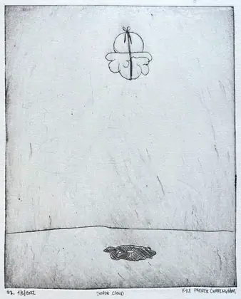

Field Station
The seasons idea, taken seriously: not a magazine issue but a research station's status board. What the studio is doing right now, where it is standing, what came back from the field this week, and which transects are open for anyone who wants to walk one.
Current season
XIII / summer
Everything That Can Be Carried
opened21 June 2026
closesequinox
filed undersurvival notes
Conditions at the station
positionmobile · satellite
presspacked
binderyoperational
easelmorning light only
waterhauled
“Can the whole operation be carried — made small enough, and durable enough, to keep making real, physical things from wherever the work happens to be?”
Hue by year
● painting93
● printmaking46
● other16
angle = measured dominant hue · radius = year · faint = near-neutral
Collected this season
200 small watercolours
painted in the fieldeach unique
his100
hers100
first releasesolstice
Open transects walk one end to end
The Juniper TrailAdobe Canyon → Nogal Canyon → the Gila · 6 stations
Survival Notesthe near-future loop · 9 stations
The Memory of Atmospherea high traverse, weather exposed · 8 stations
The Circle Routea loop that returns to the trailhead · 7 stations
Truth or Consequencestown loop, 2 hours · 6 stations
Recent specimens 2023 onward
 2024above the clouds
2024above the clouds 2024alpenglow at mineral creek with the adults after the babies have gone to sleep
2024alpenglow at mineral creek with the adults after the babies have gone to sleep 2024bottled lightning
2024bottled lightning 2024does math control nature?
2024does math control nature? 2024equilateral equilibrium
2024equilateral equilibrium 2024felt and lived
2024felt and lived 2024low angle sun rays
2024low angle sun rays 2024orbits (plankton dreaming of a sedimentary afterlife)
2024orbits (plankton dreaming of a sedimentary afterlife) 2024out there, on the horizon, a solitary cloud
2024out there, on the horizon, a solitary cloud 2024pollen and larvae
2024pollen and larvae 2024separate, yet delicate, representations of existence
2024separate, yet delicate, representations of existence 2024symbologies intertwine electronically
2024symbologies intertwine electronicallyStanding investigation the memory of atmosphere · 11 works
2024bottled lightning2024low angle sun rays2024orbits (plankton dreaming of a sedimentary afterlife)2024out there, on the horizon, a solitary cloud2024symbologies intertwine electronically 2024the algebra of water vapor
2024the algebra of water vapor 2024the atmosphere's electric finger
2024the atmosphere's electric finger 2024the river in the sky
2024the river in the sky 2023First Contact
2023First Contact 2023Harmonics
2023Harmonics
2023Shade CloudStation log
Solstice. The season opens; the first of the 200 go up.
The Periodic — production notes. Newsprint stock confirmed, four pages, one colour.
Print specs and image prep. Standardised the ladder at 480 / 960 / 1600.
Artist newspaper distributed. Twelve towns, none of them with a gallery.